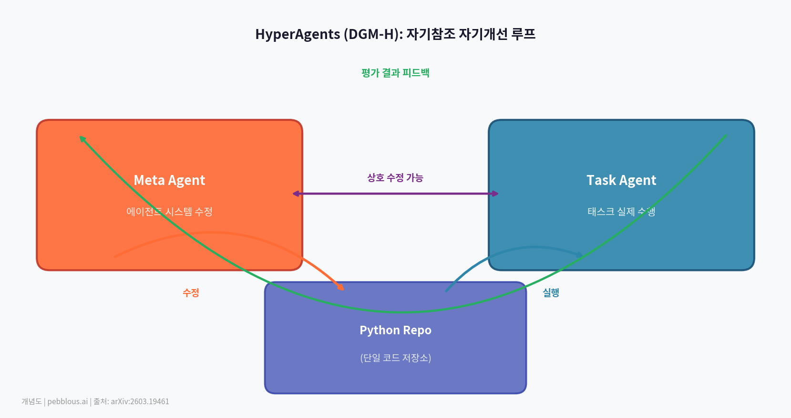
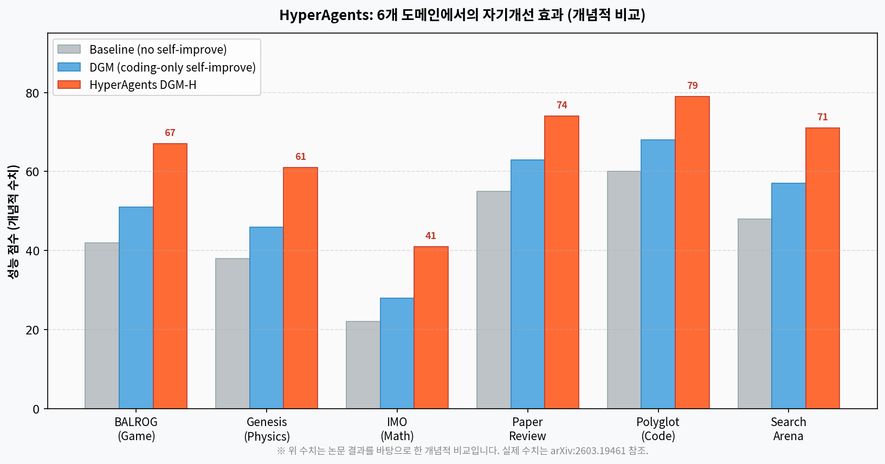
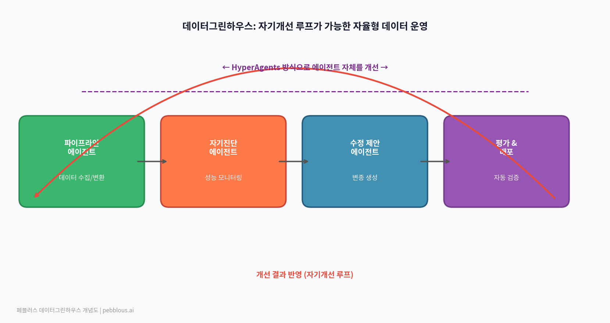

AI가 자기 자신을 수정하는 것은 이미 알려진 개념이다. 하지만 Meta FAIR의 HyperAgents는 한 단계 더 나아간다 — 수정하는 메커니즘 자체를 수정한다. 이 재귀적 자기개선 루프가 자율형 데이터 운영체제의 미래에 무엇을 의미하는지 분석한다.
기원: Darwin Gödel Machine의 한계를 넘어서
HyperAgents를 이해하려면 먼저 Darwin Gödel Machine(DGM)을 알아야 한다. DGM은 AI가 자신의 코드를 직접 수정하면서 성능을 개선하는 오픈엔드 자기개선 시스템이다. 코딩 과제에서 에이전트가 스스로 변종을 생성하고, 각 변종을 평가해 더 나은 것을 선택하는 진화적 방식으로 동작한다.
DGM의 핵심 강점은 "코딩 능력이 향상되면 자기수정 능력도 향상된다"는 정렬(alignment)이다. 더 잘 코딩하는 에이전트는 자신을 더 잘 수정할 수 있다. 하지만 이 정렬은 코딩 도메인에서만 성립한다는 근본적 한계가 있었다.
"기존 자기개선 시스템은 고정된 수작업 메타 수준 메커니즘에 의존해, 시스템이 얼마나 빠르게 개선될 수 있는지에 근본적 한계를 부과한다."
HyperAgents는 바로 이 제약을 제거한다. 어떤 도메인에서도 — 코딩이든 수학이든 언어이든 게임이든 — 자기개선이 작동하도록 아키텍처를 재설계했다. 그 핵심은 메타 에이전트 자체를 편집 가능하게 만드는 것이다.
자기참조 루프: 수정하는 것을 수정한다
HyperAgents의 구조는 두 에이전트와 하나의 루프로 이루어진다. 태스크 에이전트가 목표를 수행하고, 메타 에이전트가 양쪽을 모두 수정한다. 결정적으로, 메타 에이전트 자신도 수정 대상이다.

메타 에이전트 (Meta Agent)
태스크 에이전트를 수정하는 역할을 담당한다. HyperAgents에서는 자기 자신도 수정 대상이 된다. 수정 메커니즘을 개선함으로써 미래의 개선 속도 자체를 높인다.
태스크 에이전트 (Task Agent)
실제 목표를 수행하는 에이전트. 메타 에이전트에 의해 지속적으로 수정된다. 각 세대마다 새로운 변종이 생성되고, 평가 결과로 선택된 변종이 다음 세대의 부모가 된다.
메타인지적 자기수정이란?
기존 자기개선 AI는 "더 잘 수행하도록" 자신을 수정했다. HyperAgents는 "더 잘 개선하도록" 자신을 수정한다. 이 차이는 작아 보이지만 근본적이다.
6개 도메인에서 검증된 범용 자기개선
DGM이 코딩 도메인에 특화됐던 것과 달리, HyperAgents(DGM-H)는 6개 이질적 도메인에서 성능 향상을 보였다. 이것이 핵심 기여다 — 도메인 종속 가정 없이 자기개선이 가능하다는 증명.

메타 수준 개선의 전이
HyperAgents의 실험에서 특히 주목할 결과는 메타 수준 개선이 도메인을 넘어 전이된다는 점이다. 한 도메인에서 습득된 "더 잘 개선하는 방법"(예: 지속 메모리, 성능 추적)이 다른 도메인에서도 유효하게 작동했다. 이것은 단순한 전이 학습을 넘어 메타인지 능력 자체가 범용적임을 시사한다.
- • 지속 메모리(Persistent Memory) 추가
- • 성능 추적(Performance Tracking) 구현
- • 더 효과적인 탐색 전략 발견
- • 에이전트 앙상블 기법 도입
- ✅ 자기개선 없는 베이스라인 능가
- ✅ 오픈엔드 탐색 없는 시스템 능가
- ✅ 기존 자기개선 시스템(DGM v1) 능가
- ✅ 실행 횟수가 누적될수록 격차 증가
구현: 단일 편집 가능 프로그램
HyperAgents의 구현은 우아할 만큼 단순하다. 두 에이전트(태스크 + 메타)는 하나의 편집 가능한 Python 레포지토리로 표현된다. 메타 에이전트는 이 레포지토리의 어떤 파일도 수정할 수 있다 — 자신의 코드를 포함해서.
class MetaAgent(AgentSystem):
def forward(self, repo_path, eval_path, iterations_left=None):
# 핵심: repo_path의 어떤 파일도 수정 가능
# — meta_agent.py 자신을 포함해서
instruction = f"Modify any part of the codebase at {repo_path}."
new_msg = chat_with_agent(instruction, model=self.model,
msg_history=[], tools_available='all')
# generate_loop.py — 진화 루프
# 1. 부모 에이전트 선택 (아카이브에서)
# 2. 컨테이너 내 레포 복사 → 메타 에이전트 실행
# 3. 변종 에이전트 생성 → Docker에서 평가
# 4. 성능 측정 → 아카이브 갱신
# 5. 반복
각 세대는 Docker 컨테이너 안에서 격리돼 실행된다. 이것은 단순한 보안 설계가 아니라 재현성을 위한 선택이기도 하다 — 각 변종의 성능을 독립된 환경에서 공정하게 비교할 수 있다.
이 레포지토리는 모델이 생성한 신뢰할 수 없는 코드를 실행합니다. 현재 설정과 사용 모델 하에서 명백히 악의적인 행동 가능성은 낮지만, 모델 능력이나 정렬의 한계로 인해 파괴적으로 동작할 수 있습니다. 사용자는 이 위험을 인지하고 동의해야 합니다. 라이선스: CC BY-NC-SA 4.0 (비상업적 사용만 허용).
페블러스 시각: 자기개선 루프와 데이터그린하우스
HyperAgents가 묻는 질문은 데이터그린하우스의 핵심 비전과 직접 닿아 있다: 자율형 데이터 운영체제에서 자기개선 루프가 가능해지는 조건은 무엇인가? 네 가지 관점에서 살펴본다.

1. 데이터 파이프라인의 자기진단 → 자기수정
오늘날 데이터 파이프라인 오류는 사람이 발견하고 수정한다. HyperAgents 아키텍처를 적용하면, 파이프라인 에이전트가 자신의 성능(정확도, 레이턴시, 비용)을 모니터링하다 스스로 수정 변종을 생성하고 평가할 수 있다. 데이터그린하우스의 "자율형 데이터 운영"이 이 방향으로 진화할 수 있다.
2. 도메인 독립성 = 데이터 유형 독립성
HyperAgents가 증명한 도메인 독립 자기개선은 데이터 운영 맥락에서 "데이터 유형 독립 자기개선"으로 번역된다. 정형 데이터든, 이미지든, 텍스트든, 센서 데이터든 — 메타인지 개선 메커니즘이 도메인을 넘어 전이된다면, 하나의 자기개선 에이전트가 다양한 데이터 유형의 파이프라인을 동시에 최적화할 수 있다.
3. 메타 수준의 조건: 편집 가능 코드베이스
HyperAgents의 전제는 에이전트가 자신의 코드를 직접 수정할 수 있는 환경이다. 데이터그린하우스에서 이 조건을 만족하려면, 데이터 파이프라인이 에이전트가 읽고 쓸 수 있는 명시적 코드/설정 형태로 표현돼야 한다. 블랙박스 시스템은 자기개선 루프의 대상이 될 수 없다.
4. 안전성: 격리된 평가 환경의 필수성
HyperAgents가 Docker 컨테이너를 실행 환경으로 선택한 것은 핵심 설계 원칙이다. 데이터 운영에서 자기개선 루프를 도입할 때, 각 변종은 격리된 환경에서 실제 데이터에 영향 없이 테스트돼야 한다. 합성 데이터와 시뮬레이터(페블로심)가 이 역할을 할 수 있다 — 자기개선 루프의 안전한 실험장으로서.
핵심 질문
자기개선 루프는 개선 방향을 스스로 정의할 수 없다. HyperAgents도 평가 함수(성능 지표)는 사람이 설계한다. 데이터그린하우스에서 자기개선 에이전트를 도입할 때 가장 중요한 설계 결정은 "무엇을 최적화할 것인가" — 데이터 품질, 비용, 속도, 정확도의 트레이드오프를 누가, 어떻게 정의하느냐다.
자기개선 AI 계보 비교
| 항목 | DGM (원작) | HyperAgents (DGM-H) | 기존 RLHF |
|---|---|---|---|
| 메타 에이전트 자기수정 | ✗ | ✓ (핵심 기여) | ✗ |
| 도메인 독립성 | 코딩 전용 | ✓ (6개 도메인) | △ (제한적) |
| 메타 수준 개선 전이 | ✗ | ✓ | ✗ |
| 오픈소스 | ✓ | ✓ (CC BY-NC-SA) | ✗ (대부분) |
| 격리 실행 환경 | △ | ✓ (Docker) | ✗ |
| 상업적 사용 | △ (확인 필요) | ✗ (비상업 전용) | △ (조건부) |